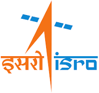

Virginia Tech
Master's in Computer Engineering · Graduated May 2025 · GPA: 3.80/4.0
SWE • AI • Cybersecurity
Computer Engineering graduate from Virginia Tech (May 2025), currently driving industrial AI and OT-security automation at TMELC.
I build data-driven products where AI meets reliability: RAG systems, reinforcement learning security tools, and telemetry-aware dashboards. My recent work spans industrial anomaly detection, 5G/O-RAN fuzz testing, and full-stack ML experiences.
Master's in Computer Engineering · Graduated May 2025 · GPA: 3.80/4.0
Bachelor's in Electronics and Communication Engineering · Aug 2019 - May 2023 · CPI: 3.60/4.0

Live demos and repositories for recent and highlighted work.
Contributed to the RAG pipeline and integration improvements.
Developer-experience enhancements and debugging contribution work.
Automated security testing methodology for O-RAN systems.
Read PaperProtocol-focused vulnerability discovery in 5G RRC workflows.
Read PaperOpen to software engineering, AI, and cybersecurity opportunities.